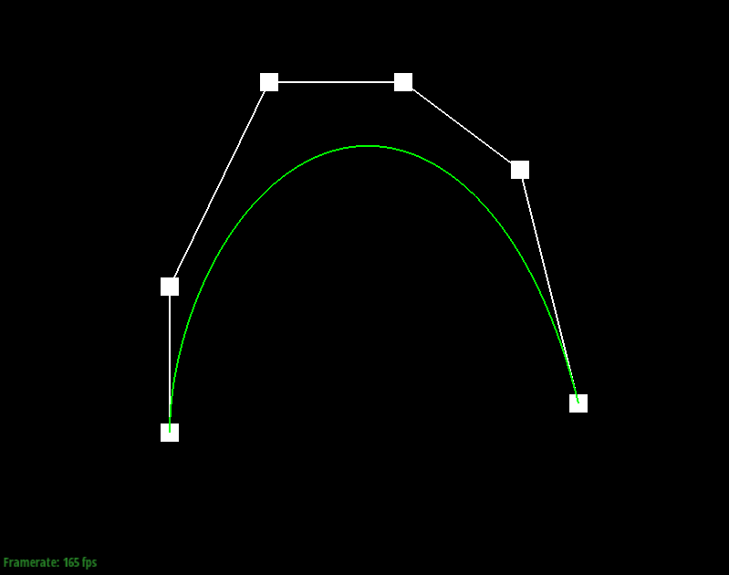
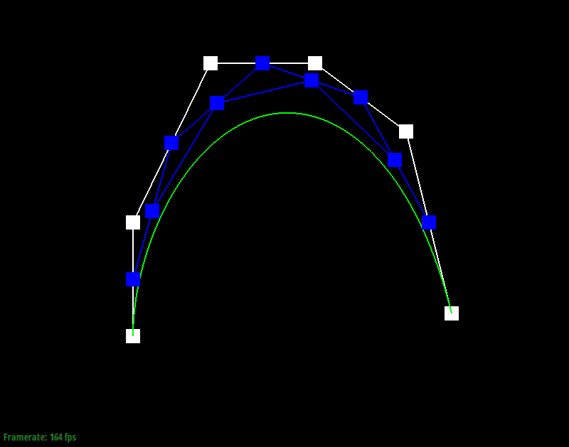
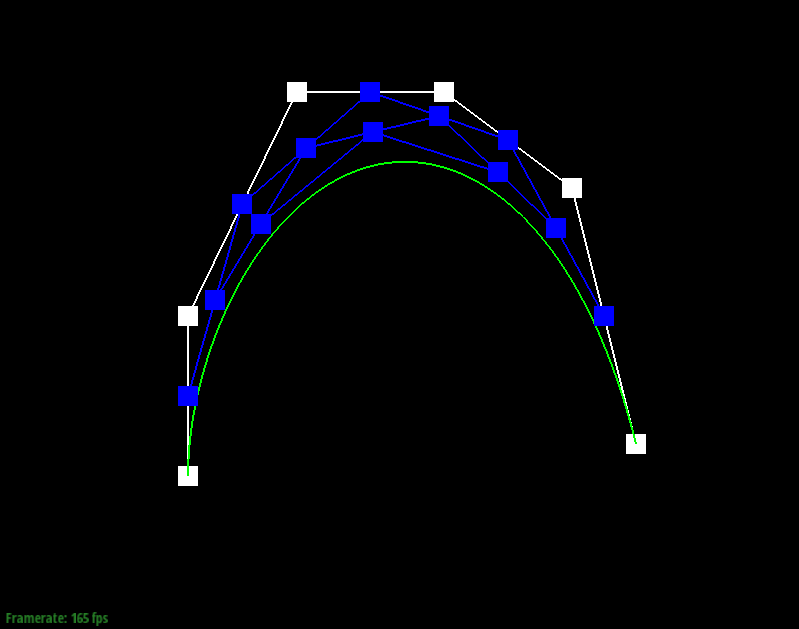
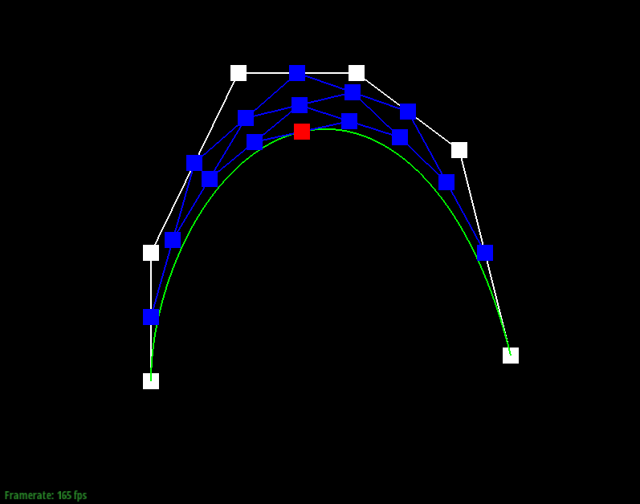
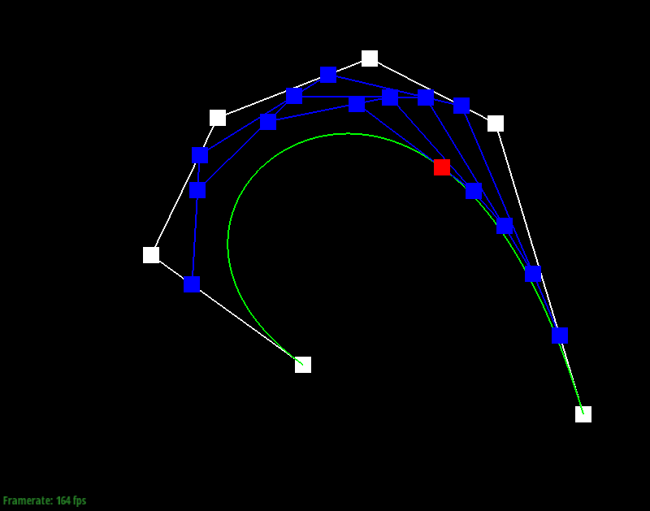
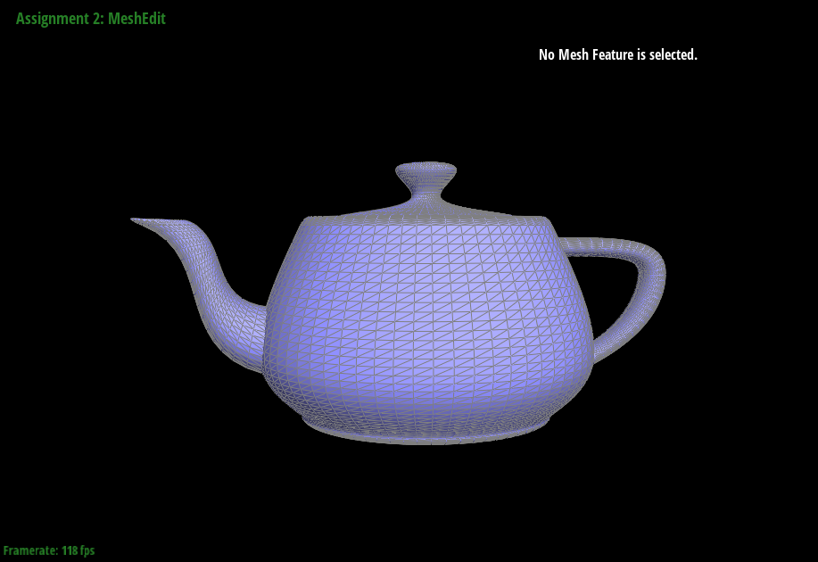
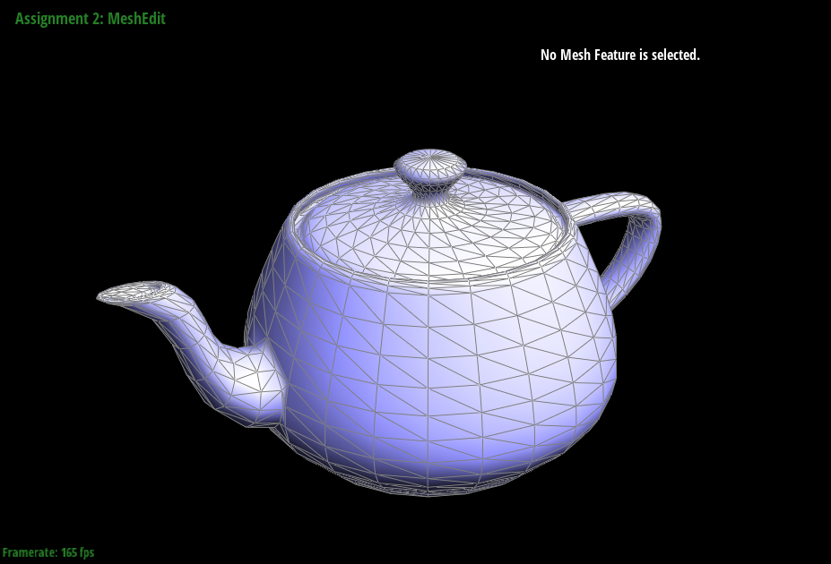

Overview
Give a high-level overview of what you implemented in this project. Think about what you've built as a whole. Share your thoughts on what interesting things you've learned from completing the project.
Section I: Bezier Curves and Surfaces
Part 1: Bezier curves with 1D de Casteljau subdivision
De Casteljau's Algorithm is one way to generate Bezier curves. Given n control points and some value t (between 0.0 and 1.0),
we are able to generate a point for each value of t that lies on a curve defined by the control points.
To implement de Casteljau's Algorithm, we need to start with the original set of control points.
For a given set P containing n amount of control points, P[0] and P[n-1] define the starting and ending positions of the curve.
Every point is used to define the curve, but points between P[0] and P[n-1] may not necessarily lie on the curve.
De Casteljau's algorithm recursively generates smaller sets of intermediate points through iterations using value t.
In each iteration with k amount of points in the current set,
we sequentially take point i and point i + 1 for i in (0 through k-2) and linearly interpolate between the two points using t to obtain a new point.
The next iteration will recurse with the k-1 points we just obtained and this procedure will repeat until we eventually obtain a single final point.
Finally, we combine all final points generated by de Casteljau from the same set of control points over all continuous values of t to obtain the entire curve.
Example
Here is an example of de Casteljau's algorithm evaluated step-by-step on six original points (white) until a single final point (red) that lies on the curve is evaluated for any given t value, which is 0.5 in this case. If we repeat this algorithm for all values of t between 0.0 and 1.0, then the green curve will be obtained.
|

|
|
|

|

|
|
|

|
If we move the original control points and modify t, we can see the difference how it generates different intermediate points thus resulting in a different final point which also lies on the respective curve that it creates.
|

|
Part 2: Bezier surfaces with separable 1D de Casteljau subdivision
Casteljau's Algorithm extends to Bezier surfaces because we can apply the same procedure to interpolate between sets of 1D curves by using points on each curve.
This would return to us a 2D structure.
To implement, recall from Part 1 that de Casteljau's algorithm takes n control points and generates a 1D curve.
Now if we have m amount of 1D curves and take a point proportional to some value u between 0.0 and 1.0 from each of those curves,
then we have a new set of m control points that we can apply de Casteljau's algorithm to.
If we apply de Casteljau's algorithm over values v between 0.0 and 1.0 to the m points obtained from the original 1D curves for each value u,
we obtain a Bezier surface.
Example
Here, we can see a teapot made of several Bezier surfaces which are each in turn made from Bezier curves.
|

|
Section II: Sampling
Part 3: Average normals for half-edge meshes
As mentioned in lecture, per-vertex normal vectors are important for shading at the vertex and pixel frequency levels.
One way to generate such vectors without knowing the underlying geometry is by inferring it through the normals of the surrounding faces (the faces that contain the vertex).
For each vertex, I created the area-weighted vertex normal by traversing through every surrounding face using the half-edge data structure
and computing the area and normal vectors for each face by taking the cross product of (v2-v1, v3-v1) with v1, v2, v3 being the corresponding vertices
to get the normal and dividing the magnitude of the normal by 2 to get the area.
These vectors are then summed and normalized, giving us a vertex normal that is weighted by each surrounding face's area.
Here, we can see a teapot shaded with and without vertex normals.

|

|
Part 4: Half-edge flip
Part 5: Half-edge split
Part 6: Loop subdivision for mesh upsampling
Section III: Optional Extra Credit
If you are not participating in the optional mesh competition, don't worry about this section!